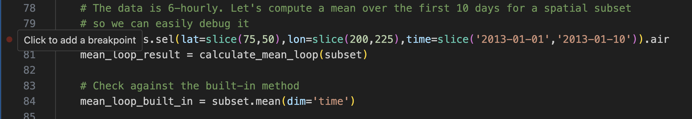
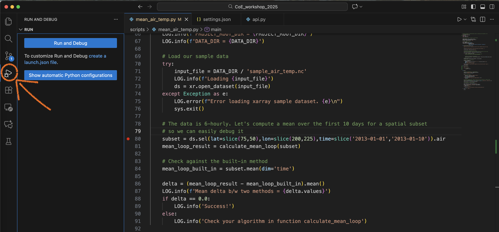
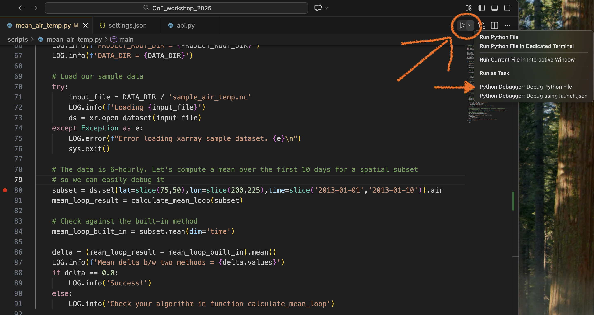
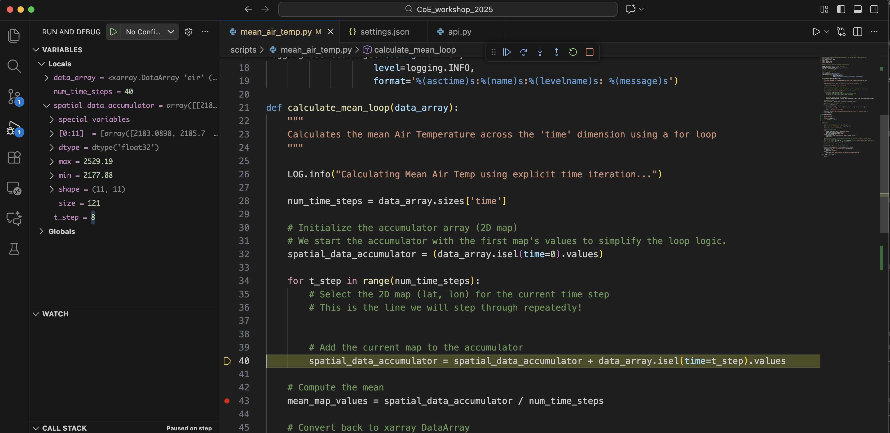
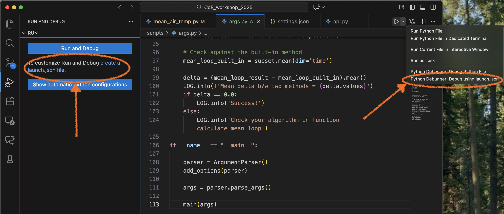
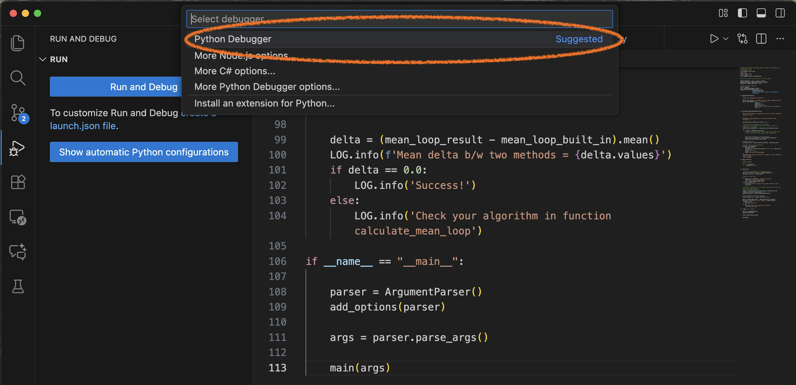
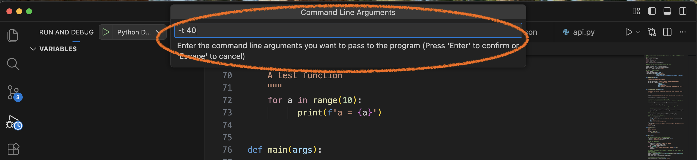
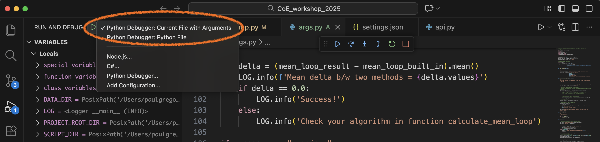
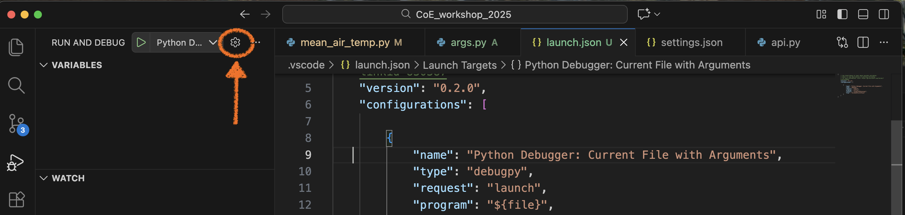
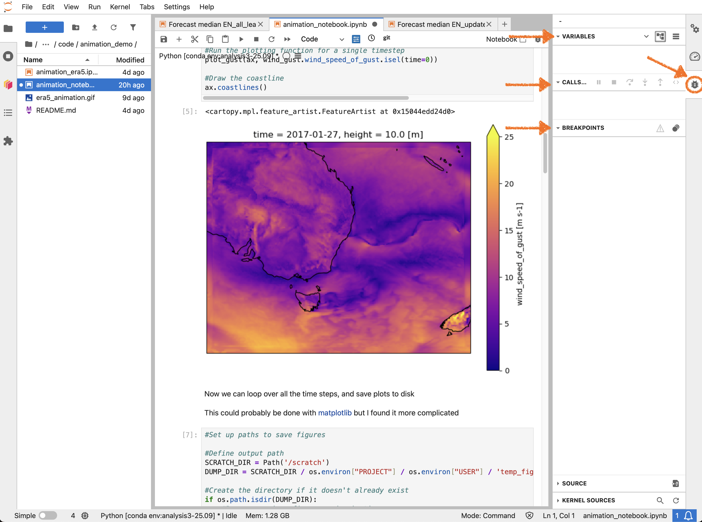

Debugging Python with VSCode#
Let’s load and run the file mean_air_temp.py from the 21centuryweather/software_engineering_demos repo. It will be in the CoE_workshop_2025 subdirectory. This is a trivial test script which
Loads in some sample air temperature data.
Uses a user-defined function
calculate_mean_loopto compute the temporal average for the first 10 days of the dataset.Then compares it against the
xarraybuilt-in method.mean(dim='time')and outputs the difference.
Your output should be similar to the following:
2025-11-18 10:35:32,120:__main__:INFO: Calculating Mean Air Temp using explicit time iteration...
2025-11-18 10:35:32,129:__main__:INFO: Mean Air Temp calculation complete via loop. Check the result's value.
2025-11-18 10:35:32,134:__main__:INFO: Mean delta b/w two methods = 6.6442790031433105
2025-11-18 10:35:32,134:__main__:INFO: Check your algorithm in function calculate_mean_loop
Ideally these two averages should be the same. Yet the user-defined function differs. Why? Let’s use a debugger to find out.
What is debugging?#
Debugging is simply removing ‘bugs’ or errors in code. The bugs may caused by:
syntax errors : we’ve typed the wrong symbol, or used the wrong order of symbols, so the code functions differently to its intended purpose.
logic errors : the code is mechanically correct but it carries out the wrong order of tasks, creating the wrong answer.
semantic errors : the code is working correctly but it has incorrect names and labels assigned to it variables or functions.
We have seen previously that a Linter will detect and fix basic syntax errors that will prevent a script from running. But if the script runs, but produces incorrect results, we will need to conduct a forensic investigation to ensure how we think the code is executing is the same as how it actually executes.
Typically, undergraduate coding involves using lots of print statements to standard output to view the values of parameters and variables as they change throughout the code.
But once our codes grow in complexity, our debugging methods must also grow in sophistication.
What is a debugger?#
A debugger is a module or executable that allows the code to be executed, line-by-line, and will display the value of a variables at each line.
Key concepts involved in debugging:
Breakpoints : A long script may involve thousands of lines spread across multiple files. We don’t want to examine every one. So we place a breakpoint at a specific line number, which tells the debugger to ‘stop the program at this point’
Step Over : Once we have stopped program execution at a breakpoint, we will ‘step over’ individual lines of code, one-at-a-time. If we encounter any function calls at a single line, we will ‘step over’ them.
Step Into : If we encounter a function call on a single line, we will ‘step into’ that function and proceed with a line-by-line analysis.
Continue : Cease our line-by-line analysis, and continue to the next breakpoint, or until the program ends (successfully or otherwise).
Debugging using Pdb#
Python comes with its own debugging module - pdb. This runs inside a terminal so it doesn’t have all the nice visualisation tools that an IDE debugger would (such as array and dictionary viewers). But it’s a good place to start.
Insert the following in mean_air_temp.py where you want to put the first breakpoint.
breakpoint()
This imports the pdb module, halts the current execution of the script and gives us access to the values of all variables, the call stack (the sequence of function calls that led to this point) and the scope of the current function.
Let’s put the breakpoint in main(), just before we compute the subset of the input DataSet. Now run the script inside an IPython console. It should produce this.
In [3]: %run mean_air_temp.py
2025-11-17 17:02:18,228:__main__:INFO: PROJECT_ROOT_DIR = /Users/PGREGORY/code/software_engineering_demos/CoE_workshop_2025
2025-11-17 17:02:18,228:__main__:INFO: DATA_DIR = /Users/PGREGORY/code/software_engineering_demos/CoE_workshop_2025/data
2025-11-17 17:02:18,228:__main__:INFO: Loading /Users/PGREGORY/code/software_engineering_demos/CoE_workshop_2025/data/sample_air_temp.nc
> /Users/PGREGORY/code/software_engineering_demos/CoE_workshop_2025/scripts/mean_air_temp.py(74)main()
-> subset = ds.sel(lat=slice(75,50),lon=slice(200,225),time=slice('2013-01-01','2013-01-10')).air
(Pdb)
The program has halted at the location of the breakpoint() statement. Type l to ‘list’ the lines of code around our current position, in the context of the whole script.
(Pdb) l
76 sys.exit()
77
78 breakpoint()
79 # The data is 6-hourly. Let's compute a mean over the first 10 days for a spatial subset
80 # so we can easily debug it
81 -> subset = ds.sel(lat=slice(75,50),lon=slice(200,225),time=slice('2013-01-01','2013-01-10')).air
82 mean_loop_result = calculate_mean_loop(subset)
83
84 # Check against the built-in method
85 mean_loop_built_in = subset.mean(dim='time')
86
In this case, we have stopped at line 81. Let’s hit n to step over to the next line. This means we have now computed subset, and we can interrogate the contents of subset from the debugger using the p, or ‘print’ command. E.g.
(Pdb) p subset.shape
(40, 11, 11)
(Pdb) p subset[0].values
array([[241.2 , 242.5 , 243.5 , 244. , 244.09999, 243.89 ,
243.59999, 243.09999, 242.5 , 241.89 , 241.2 ],
[243.79999, 244.5 , 244.7 , 244.2 , 243.39 , 242.39 ,
etc.
When we are pointing to the line that defines the subroutine calculate_mean_loop, e.g.
-> mean_loop_result = calculate_mean_loop(subset)
press s to step into this line. Now we are inside the function definition of calculate_mean_loop and we can keep pressing n to traverse through the function until we reach the for loop.
(Pdb) l
29
30 # Initialize the accumulator array (2D map)
31 # We start the accumulator with the first map's values to simplify the loop logic.
32 spatial_data_accumulator = (data_array.isel(time=0).values)
33
34 -> for t_step in range(num_time_steps):
35 # Select the 2D map (lat, lon) for the current time step
36 # This is the line we will step through repeatedly!
37
38
39 # Add the current map to the accumulator
We can continue to hit n to step through the loop. Note the debugger will skip whitespace and comment lines.
Note this loop will activate 40 times, as:
(Pdb) p num_time_steps
40
We can skip to the end of the loop, by setting another breakpoint at the line where we compute our mean
42 # Compute the mean
43 mean_map_values = spatial_data_accumulator / num_time_steps
44
In this case, I type b 43. The debugger confirm it’s created a breakpoint at the current file and line number. You can type b to list all current breakpoints.
Note
There are loads of pdb ‘cheat-sheets’ available. Here is an example.
Now we can hit c to continue stepping through every state of the loop until we nit the computation of the mean, where we divide every value in our array spatial_data_accumulator by the number of time steps.
-> mean_map_values = spatial_data_accumulator / num_time_steps
(Pdb) p t_step
39
(Pdb) n
-> mean_da = xr.DataArray(
(Pdb) p mean_map_values
array([[252.74326, 252.99825, 253.08052, 253.01326, 252.86826, 252.78824,
252.84802, 253.12149, 253.50826, 253.9073 , 254.1705 ],
[255.57622, 255.6365 , 255.38577, 254.86075, 254.21646, 253.68326,
253.3757 , 253.34525, 253.49832, 253.63924, 253.58247],
[258.28824, 257.6735 , 256.7273 , 255.60127, 254.51578, 253.68999,
Let’s hit c to continue to the end of the program.
This confirms the two mean values are different.
Debugging using VSCode#
Now that we understand the mechanisms behind debugging, let’s use the VSCode debugger. Remove the breakpoint() line from your source code, hover your cursor to the left of the line numbers where we define the subset data array. You’ll notice a dark red circle appear, along with a pop-up window.

Click on the line number you want, to the left of the line number. A solid bright red circle will now appear.
You’ve now created the first breakpoint for the VSCode debugger. There are two way to launch the debugger.
Click on the Debug symbol on the taskbar on the far left.
This will bring up the ‘Run and Debug’ console. Click on `Run and Debug’ and accept all defaults.

Activate the pull-down menu to the right of the ‘Run’ icon on the top right and select the following option:

We have now entered the VSCode graphical debugger! On right hand side is your variable explorer, where you can click to interrogate the data structures and contents of all local and global variables currently in scope at the current line of code.
On the bottom, you can click on the DEBUG CONSOLE to type Python expressions to evaluate the values of all current variables. Think of this as being similar to a pdb command line.

Above the source code are six control buttons in a detachable window which we use to control program flow. These buttons are (from L to R):
Continue (F5)
Step Over (F10)
Step Into (F11)
Step Out (Shift+F11)
Restart (Shift+Cmd+F5)
Stop (Shift+F5)
Each button comes with a function-key short-cut. These buttons are similar to those we used in pdb. The ‘Step Out’ button allows us to move directly from function back into its parent code.
Let’s use these buttons to step over to the next line of code (line 81 in this example) and then step into the function calculate_mean_loop.
Now you can use the ‘Step Over’ button to cycle through the loop. In this example, the code will bounce between lines 34 and 40 as the loop iterates. Note how the value of t_step and the values of spatial_data_accumulator will change in the variable browser.
If you click on spatial_data_accumulator you will be able to see the first 11 values, and the max and min of the array. At every step in the loop, these values will update with a blue flash every time they change.

We can place another breakpoint in the code (line 43 in this example) by using the mouse to create a red circle to the left of line 43, and then hit the ‘Continue’ control button to skip to this point.
We can then step through the rest of the code until its completion.
Using the debugger and your knowledge of Python loops, have you been able to spot the bug yet? Are you able to change a line of code so that our function calculate_mean_loop matches the value of the xarray built-in function mean?
Using arguments with the VSCode launch.json file#
Often your script will require command-line arguments at runtime. You could hard-wire the values of these arguments when using the VSCode debugger, or you can configure command-line arguments by editing the ‘launch.json’ file.
Let’s examine the file args.py in the 21centuryweather/software_engineering_demos directory.
This script is the same as mean_air_temp.py except it takes a command-line argument for the number of slices to average along the time dimensions.
You can execute this script in an IPython session as follows:
In [16]: %run args.py -t 40
Let’s create a launch configuration to run the debugger using this command-line argument.
VSCode provides a number of ways to achieve this. Select Run and Debug mode using a launch.json file by either
Selecting
create a launch.json filevia the left hand taskbar, orSelecting
Python Debugger: Debug using launch.jsonvia the top right pull-down menu.

Then select Python Debugger from the pop-up menu.

Select the option to add arguments, which will allow you to enter your arguments interactively.

You can proceed with debugging as normal.
Note
Don’t forget to add a breakpoint, otherwise the code will exit without stopping.
We have now created a debugging configuration which will be active for the remainder of the session. It can be accessed from the Run and Debug console as Python Debugger: Current File with Arguments

We can do this because we have created an entry in the launch.json file which now contains the following:
{
// Use IntelliSense to learn about possible attributes.
// Hover to view descriptions of existing attributes.
// For more information, visit: https://go.microsoft.com/fwlink/?linkid=830387
"version": "0.2.0",
"configurations": [
{
"name": "Python Debugger: Current File with Arguments",
"type": "debugpy",
"request": "launch",
"program": "${file}",
"console": "integratedTerminal",
"args": "${command:pickArgs}"
}
]
}
You can view the launch.json file by accessing the tool ‘cog’ or ‘gear’ on the top right, next to the ‘Run and Debug’ pull-down menu.

More complicated configurations can be created by editing the launch.json file. For example, when attempting to debug a Python script associated with the ACCESS-rAM3 ancilliary suite, I created the following launcher configuration to allow the file ancil_lct.py to be debugged.
{
// Use IntelliSense to learn about possible attributes.
// Hover to view descriptions of existing attributes.
// For more information, visit: https://go.microsoft.com/fwlink/?linkid=830387
"version": "0.2.0",
"configurations": [
{
"name": "Python Debugger: debug ancil_lct for u-dg767",
"type": "debugpy",
"request": "launch",
"program": "${file}",
"console": "integratedTerminal",
"args": ["/home/548/pag548/cylc-run/u-dg767/share/data/etc/ancil_master_ants//vegetation/cover/cci/v3/vegetation_fraction.nc",
" --target-grid",
"/home/548/pag548/cylc-run/u-dg767/share/data/ancils/Lismore/era5/grid.nl",
"--transform-path",
"/g/data/access/TIDS/UM/ancil/data/transforms/cci2jules_ra1.json",
"-o",
"/home/548/pag548/cylc-run/u-dg767/share/data/ancils/Lismore/era5/qrparm.veg.frac_cci_pre_c4",
"--landseamask-output",
"/home/548/pag548/cylc-run/u-dg767/share/data/ancils/Lismore/era5",
"--ants-config",
"/home/548/pag548/cylc-run/u-dg767/work/1/Lismore_era5_ancil_lct/rose-app-run.conf"
]"
}
]
}
Further information#
The official VSCode debugging documentation is available here (which includes a tutorial video) while extra information to help configure Python scripts for the VSCode debugger can be found here.
Note
Jupyter Notebooks also contain their own debugger. If you click on the ‘Bug’ symbol on the right hand taskbar, it opens up the the built-in graphical debugger with all sorts of options. 
The official JupyterLab debug docs are here
Conclusion
Debuggers are powerful tools that allow us to see in forensic detail how the code actually functions, as opposed to how we think it functions.
There is an overhead associated with configuring them and learning how they work, but they are unmatched for solving difficult coding problems.
In particular, the VSCode Debugger allow people used to writing scripts in an IDE (e.g. MATLAB users) a familiar development environment.
Debuggers allow us to move from the realm of guesswork, into methodically and systematically working the problem.